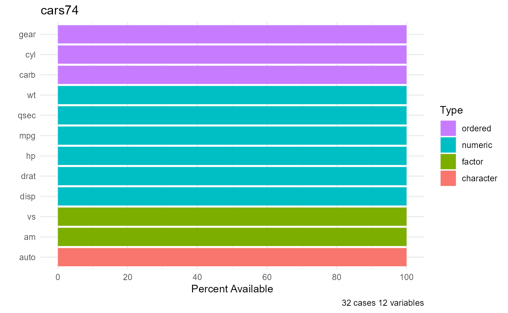
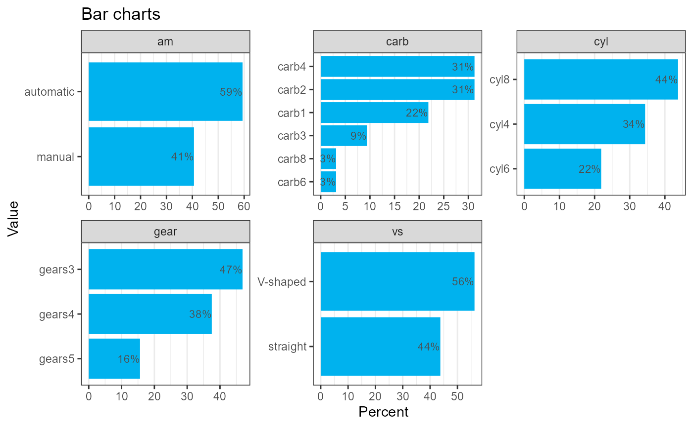
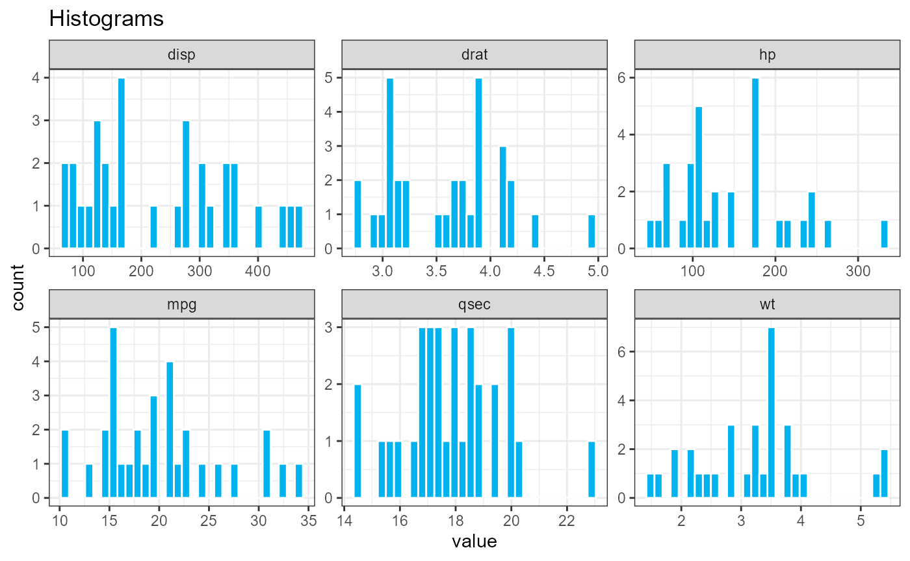
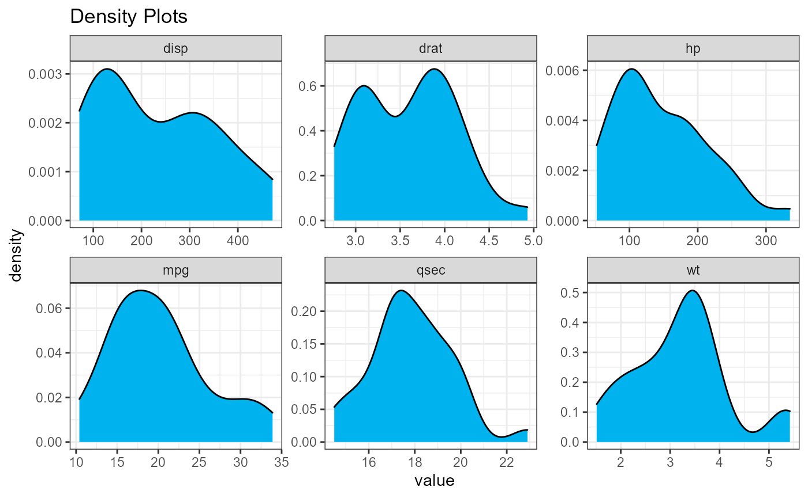

The purpose of the qacBase package is to provide functions for descriptive statistics, data management, and data visualization. As a part of this package, the contents function produces a series of informational tables that allow for users to have a comprehensive understanding of their dataset of choice as well as the each of the quantitative and categorical variables featured in their dataset. Graphical functions, such as barcharts, histograms, and densities provide succinct visualizations of the variables in a data frame.
How can you quickly become familiar with the data in a data frame? We’ll use the cars74 data frame as an example. This data frame contains information on the characteristics of 32 cars in 1974.
data(cars74)contents()
contents(cars74)
#>
#> The data frame cars74 has 32 observations and 12 variables.
#>
#> Overall
#> pos varname type n_unique n_miss pct_miss
#> 1 auto character 32 0 0%
#> 2 mpg numeric 25 0 0%
#> 3 cyl ordered 3 0 0%
#> 4 disp numeric 27 0 0%
#> 5 hp numeric 22 0 0%
#> 6 drat numeric 22 0 0%
#> 7 wt numeric 29 0 0%
#> 8 qsec numeric 30 0 0%
#> 9 vs factor 2 0 0%
#> 10 am factor 2 0 0%
#> 11 gear ordered 3 0 0%
#> 12 carb ordered 6 0 0%
#>
#> Numeric Variables
#> n mean sd skew min p25 median p75 max
#> mpg 32 20.09 6.03 0.61 10.40 15.43 19.20 22.80 33.90
#> disp 32 230.72 123.94 0.38 71.10 120.83 196.30 326.00 472.00
#> hp 32 146.69 68.56 0.73 52.00 96.50 123.00 180.00 335.00
#> drat 32 3.60 0.53 0.27 2.76 3.08 3.70 3.92 4.93
#> wt 32 3.22 0.98 0.42 1.51 2.58 3.33 3.61 5.42
#> qsec 32 17.85 1.79 0.37 14.50 16.89 17.71 18.90 22.90
#>
#> Categorical Variables
#> variable level n pct
#> auto AMC Javelin 1 0.03
#> Cadillac Fleetwood 1 0.03
#> Camaro Z28 1 0.03
#> Chrysler Imperial 1 0.03
#> Datsun 710 1 0.03
#> Dodge Challenger 1 0.03
#> Duster 360 1 0.03
#> Ferrari Dino 1 0.03
#> Fiat 128 1 0.03
#> Fiat X1-9 1 0.03
#> (22 more levels) 22 0.69
#> cyl cyl4 11 0.34
#> cyl6 7 0.22
#> cyl8 14 0.44
#> vs V-shaped 18 0.56
#> straight 14 0.44
#> am automatic 19 0.59
#> manual 13 0.41
#> gear gears3 15 0.47
#> gears4 12 0.38
#> gears5 5 0.16
#> carb carb1 7 0.22
#> carb2 10 0.31
#> carb3 3 0.09
#> carb4 10 0.31
#> carb6 1 0.03
#> carb8 1 0.03As shown above, the contents function produced three tables, one that provides an overall summary of the data and two tables that break down the quantitative and categorical variables of the dataset respectively.
The overall table describes each of the variables in the data frame, listing their column position, variable name, the variable type, number of unique values, the number of missing values, and the corresponding percentage of missing values.
The quantitative table provides information for each of the quantitative variables in the data frame, listing the variable name, the number of non-missing values, and a series of summary statistics including the mean, standard deviation, skewness, minimum, 25%tile, median, 75%tile, and maximum.
The categorical table provides information for each of the categorical variables in the data frame, listing the variable name, the specific levels of each variable, and the number of observations for each level, and percentage distribution of each variable level. By default, up to 10 levels of a categorical variable are displayed (but you can increase this by adding the option maxcat = #, where # is the number of levels to display).
If the dataset only contains quantitative or categorical, then only the overall summary table and the relevant variable table would be printed.
The df_plot function provides a single graph displaying the variables, their types, and the percent of values present (or missing).
df_plot(cars74)
The barcharts function plots the distribution of each of the categorical variables in the data frame.
barcharts(cars74)
#> The following variable had more than 20 levels and were not graphed:
#> auto
The histograms and densities functions plot the distribution of each of the quantitative variables in the data frame.
histograms(cars74)
densities(cars74)